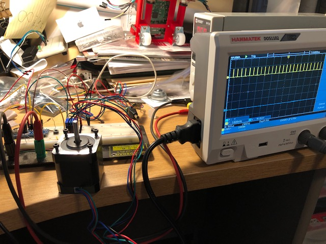
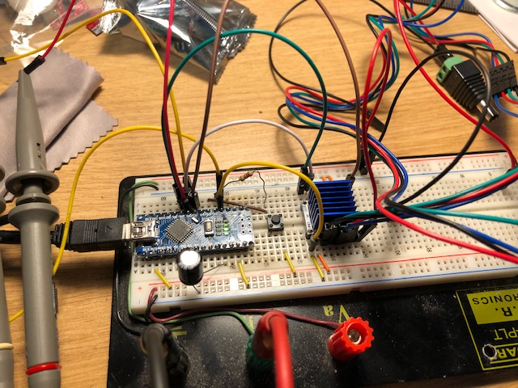
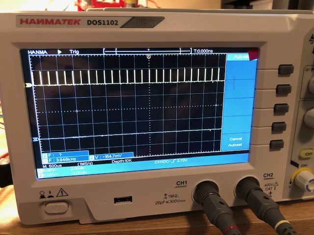

Stepper Driver Testing
It’s been many years since I drove a stepper motor from an arduino. In order to get back into the saddle, I made a simple arduino sketch for making a motor rotate. The goal is to simply have the arduino get a stepper motor to drive using the step and direction pins on a silent step stick with a TMC2208 from trinamic on it. The trinamic stepper motor drives are a project requirement.
The sketch can be found in the software folder in my github for the project. the first sketch was just using arduino delays to manually drive the step pin high and low. It seemed to work but the motor would randomly stutter. I started with a 12 V wall wart style power supply. I connected the step pin to my newly acquired oscilloscope to see if the step or enable pins were stuttering. They were not. I thought the issue might be the 12V so I connected the trinamic driver up to my adjustable power supply at 12V. I found the higher the voltage, the more current the trinamic stepper was sinking. This caused the stepper driver to heat up which led to a thermal shutdown. this was the root of the stuttering. I dont yet understand why this is the case as the trinamic driver is good well above 12V. I’ll have to dig into the documentation further. The optiminal seemed around 6 V. Less and the stepper couldn’t drive at all. More and extra current was being sunk by the driver.
Now that the stepper driver was driving the stepper motor, I turned my attention to getting the accelstepper library to drive the motor. this is critical as the software for the scanner relies on it. After a few missteps and extra documentation reading I got it working. The issue I was seeing was that the steps would be coming out of the arduino, but the enable pin was not going active. The trinamic driver is active low so a simple comfiguration change to the stepper object to invert the logic on the enable pin and everything worked wonderfully.
  